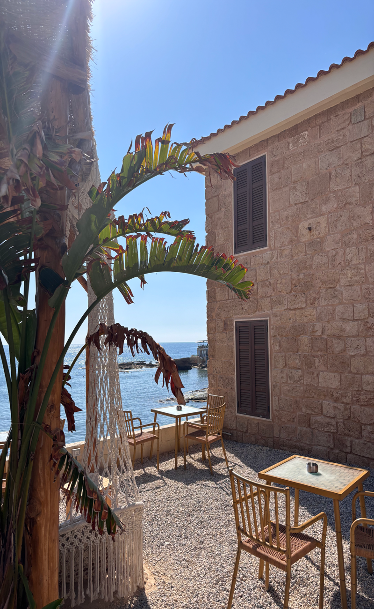

Lebanon
23rd of June till the 23rd of July 2026.
Four weeks traveling around Beirut, exploring the places, food, culture and family. In the mountains and on beaches. During my time in Lebanon I explored many places, Batroun was somewhere I really loved as it had an European style to it. The brick buildings were amazing and details and really gorgeous to admire. This image was taken in Batroun after exploring around the area for hours. We decided to get some lemonade from Hilmi's House of Lemonade which was absolutely delicious. After our fresh cold lemonade we had some authentic Lebanese food from a beautiful restaurant, eating things like tabouli, vine leaves, fattoush salad and some chicken shawarma, all my favourite things. When lunch was demolished we went back to exploring and I had a swim in the Mediterranean sea which is beautiful and warm. Looking back, Batroun was one of my many favourites from my time away, it was so beautiful and calm. I love traveling, discovering new places and cultures and creating memories with my family and friends. My trip to Lebanon was really important to me as it allowed me to connect with my family again after 7 years of not seeing them and connect with my own culture and experience all the beautiful things the country has to offer, it really was a special holiday that I will be forever grateful for.